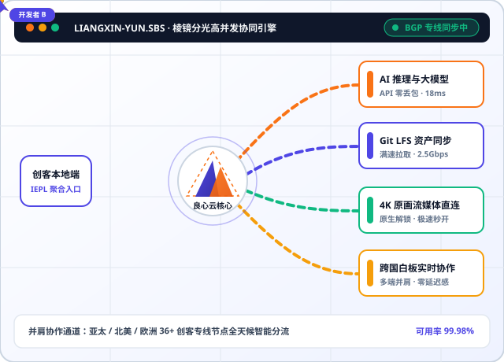

深港/沪日双核 IEPL 内网直连
绕开公网国际出口拥堵节点，数据通过企业级以太网专线点对点直达香港、东京与新加坡机房，物理层规避晚高峰丢包与抖动，保障全天候满速传输。
拒绝晚高峰拥堵与隐形限速。良心云采用多线BGP智能分光与内网IEPL传输通道，为独立开发者、影视工作坊与研究团队提供低至18ms的丝滑网络加速体验，树立透明纯粹的机场推荐口碑标杆。

从物理传输层到客户端智能分流，良心云以实打实的专线冗余保障每一条数据流稳定抵达。
绕开公网国际出口拥堵节点，数据通过企业级以太网专线点对点直达香港、东京与新加坡机房，物理层规避晚高峰丢包与抖动，保障全天候满速传输。
无论是笔记本、工作站、平板还是手机，同一账号支持多设备同时高速在线。所有专线节点明码标价，绝不在后台暗改流量倍率，让每一GB流量都真实耐用。
实时监测亚太与跨太平洋海底光缆健康度，一旦检测到单路路由延迟异动，棱镜调度引擎在30毫秒内自动无感切换至备用光缆通道，正在进行的远程会议不掉线。
全节点部署新一代AEAD流加密协议与TLS伪装传输，从源头阻断流量特征识别与DNS污染。服务端采用无盘内存运行架构，不留存任何用户访问记录。
针对生成式AI交互、跨国代码协作与超高清视听场景深度调优，让灵感不再等待缓冲。
精选高信誉度北美与欧洲原生IP池，完美适配主流对话大模型、AI绘图工作台与云端IDE辅助编程插件，告别账号风控弹窗与请求超时。
内置スマートDNS透明解析模块，全面支持港区、日区、美区及欧洲多国流媒体平台4K HDR高码率播放，拖动进度条即刻响应，无卡顿缓冲。
针对GitHub、HuggingFace权重文件、Docker镜像仓库及Figma跨国白板进行专项TCP窗口加速，数十GB模型与美术资产包分钟级完成同步。
全面兼容Windows、macOS、iOS、Android及软路由OpenWrt网关，提供开箱即用的精细化分流规则，国内应用直连不减速，海外流量精准走专线。
良心云坚持诚实透明计费，全系套餐均享IEPL内网专线与流媒体解锁权益，按需灵活选择。
适合个人开发者、日常学术检索与高清观影
适合重度AI用户、双人搭档与跨国远程办公
适合小型设计工坊、影视后期与高频API团队
快速了解良心云的接入方式、协议兼容性与服务保障细节。
良心云提供标准化通用订阅中心，一键导入即可在 Clash 系列、Sing-box、Shadowrocket、Quantumult X、Stash、V2rayN 以及路由器 OpenWrt 插件上顺畅运行，三步之内即可完成配置。
针对市面上部分服务商虚标带宽、暗中设置高倍率扣费的乱象，良心云承诺全节点透明计费、绝不超售。后台实时展示明细流量统计，所见即所得，保障创作者的每一分预算都花在实处。
只要在所选方案允许的并发设备数与月度流量额度内，良心云不设任何单线程限速策略。工作室矩阵版完美支持旁路由与透明网关部署，满足团队成员并肩同步大体积工程文件。
用户控制台内置详尽的图文配置手册与排障指南（也可随时参阅本站创客观察专栏的技术教程），同时提供全天候在线客服与技术工单支持，快速协助解决各类网络疑难。
来自一线研发、视觉设计与跨境内容团队的真实长期使用反馈。
“我们三人的独立游戏工坊每天都要向海外仓库同步数十GB的Git LFS美术资产。换用良心云双人并肩版与矩阵版后，晚高峰拉取速度稳定跑满千兆宽带，再也没有因为连接中断重传过整个资产包。”
“日常开发高度依赖海外大模型API与代码补全插件，以前最怕遇到429报错或IP被封禁。良心云的北美原生专线节点非常纯净，接口响应延迟长期保持在低位，开发体验提升了一个量级。”
“作为视觉传达工作室，我们需要频繁参考海外4K原片素材并与伦敦客户在Figma上实时改稿。良心云不仅4K视频拖动即播，而且计费非常透明实在，是真正值得同行长期信赖的机场推荐方案。”